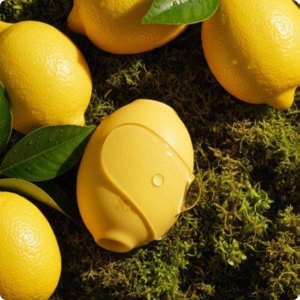
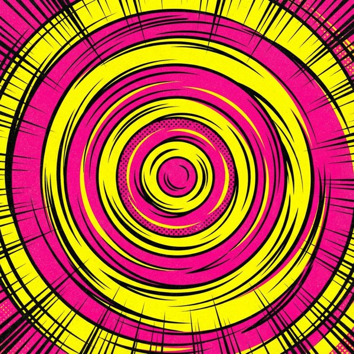
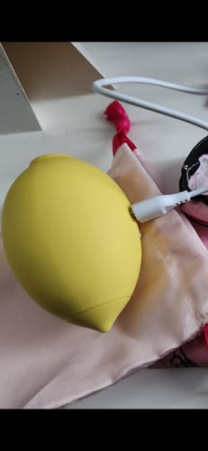
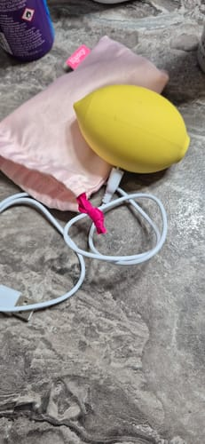
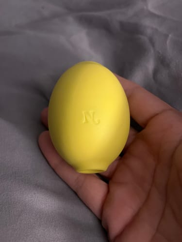
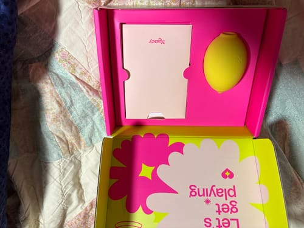
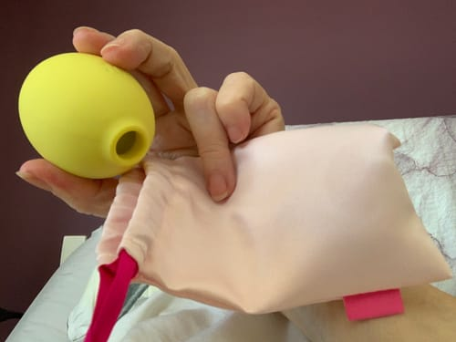
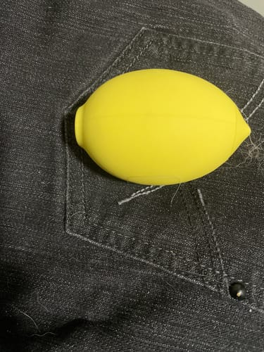
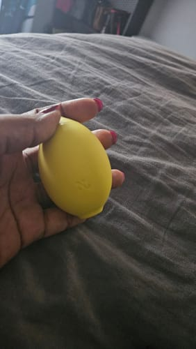
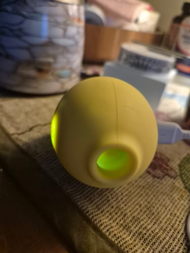

Ontgrendel de Krachtigste orgasmes van je leven
Nancy's bekroonde LEM™ gebruikt medisch onderbouwde luchtdruktechnologie voor genot dat je omver blaast.
-
Moeiteloos genot binnen enkele minuten
-
100% lichaamsveilig medisch siliconen
-
Fluisterstil & discreet
-
10 intensiteitsniveaus

"Beste aankoop van 2025!"
Waarom 80% van de vrouwen doet alsof (en waarom dat niet jouw schuld is)
Je bent jarenlang verteld dat een klassieke vibrator dé oplossing is. Maar voor veel vrouwen werkt genot heel anders dan dat. Maar 90% van je genotszenuwen zit diep vanbinnen verstopt.
De ’gevoelloosheidsval’
Zoemende vibrators overprikkelen de oppervlakte, waardoor je gevoelloos raakt in plaats van klaarkomt. Frustrerend en uitputtend.
Het ’lompe’ ontwerp
De meeste speeltjes zijn luid, zwaar en onhandig. Niets verpest de sfeer sneller dan een motor die klinkt als een grasmaaier.
De ’lege batterij’-nachtmerrie
Net als je bijna zover bent… valt-ie uit. Goedkope batterijen verpesten het moment. Jij verdient betrouwbaarheid.
Het "ijsberg"-effect
Wist je dat het zichtbare deel van de clitoris slechts het topje van de ijsberg is? De wortels (crura) reiken diep je lichaam in.
-
Gewone trillingen:Laten alleen het kleine zichtbare topje trillen. Het resultaat? Zwakke, oppervlakkige orgasmes.
-
Het verschil van de LEM:Gebruikt luchtdruktechnologie om een vacuüm te creëren. Van binnenuit wordt de hele clitoris gestimuleerd. Het resultaat? Een ontlading door je hele lichaam, tot in je tenen.
Stop met kietelen.
Begin met
stimuleren.
De LEM zoemt niet zomaar. Hij bootst het gevoel van orale seks na met zachte golven luchtdruk. Contactloos, dus geen gevoelloosheid, alleen puur, oplopend genot.
Ervaar het verschilWaarom luchtdruk alles verandert
Het is geen magie. Het is stromingsleer. Klassieke trillingen verspreiden energie. Luchtdruk bundelt hem.
Het vacuümeffect
De LEM vormt een afsluiting rond de clitoris. Snelle veranderingen in luchtdruk trekken zachtjes bloed naar het erectiele weefsel (de eikel en clitoris) en verhogen de gevoeligheid binnen enkele seconden tot wel 200%.
Contactloze golven
Direct contact kan zenuwen op den duur ongevoeliger maken (het "gevoelloosheids"-effect). Luchtpulsen prikkelen de zenuwen zonder ze rechtstreeks aan te raken, zodat je hoogtepunt na hoogtepunt bereikt zonder irritatie.
Diep in het weefsel
Trillingen blijven op de huid. Luchtdrukgolven dringen dieper door en bereiken de 8.000+ zenuwuiteinden die onder de oppervlakte verstopt zitten. Zo ontstaat een orgasme door je hele lichaam in plaats van op één plek.
Klinisch inzicht
"Vacuümtherapie voor de clitoris verhoogt de doorbloeding aanzienlijk, waardoor gevoel en zwelling toenemen."
– Journal of Sexual Medicine (aangepast uit de bevindingen)

"Ik durfde het eerst niet…"
"Ik ben 42 en had nog nooit een speeltje gehad. De LEM heeft mijn leven veranderd. Zo schattig en vriendelijk, helemaal niet eng."
Niet eng.
Gewoon leuk.
De LEM is gemaakt om laagdrempelig te zijn. Eén knop. Zacht siliconen. Geen ingewikkelde handleidingen. Net zo makkelijk als je elektrische tandenborstel, maar veel leuker.
- Simpele bediening met 2 knoppen
- Past in je handpalm
- Schattig, niet-intimiderend ontwerp
Gemaakt voor jouw leven
Waterdicht &
klaar voor in bad


Premium magnetisch opladen
Een cadeautje
voor jezelf
De LEM uitpakken voelt als een cadeau openmaken. Luxe verpakking, discreet ontwerp en alles om meteen te beginnen.



Krachtig genoeg om je tenen te laten krullen.
Stil genoeg om het geheim te houden.
Jouw genot gaat niemand wat aan. Zelfs op de hoogste stand zoemt de LEM zachter dan gefluister in een bibliotheek. Gebruik hem met huisgenoten naast je of familie verderop in de gang – nul stress, 100% zaligheid.
Het "derde wiel" dat je écht wilt
De LEM is niet alleen voor solomomenten. Het is de ultieme wingman. Een speeltje introduceren kan kwetsbaar voelen, maar door het vriendelijke ontwerp van de LEM is het de perfecte ijsbreker.
- Gebruik het tijdens het voorspel om de spanning enorm op te bouwen
- Meng orgasmes tijdens het vrijen
- Haal de druk bij je partner weg om te "presteren"
"Onze seksleven gered"
"Mijn man kocht dit voor me. Ik twijfelde, maar we gebruikten het samen en… WOW. Het haalde de druk bij hem weg en we konden weer gewoon plezier maken. We zijn hechter dan ooit."
Klaar wanneer jij dat bent.
Keer. Op. Keer.
Niets verpest de sfeer zo erg als een lege batterij. De LEM heeft een enorme speeltijd van 120 minuten. Dat zijn weken dagelijks gebruik op één lading.
Goedkoper dan een massage.
Beter dan therapie.
Massage van 1 uur
Gaat mee: 1 dag
Nancy LEM™
Gaat mee: jarenlang genot
De LEM is geen uitgave, maar een investering in je mentale gezondheid. Endorfines verlagen stress en verbeteren je slaap. Kun je écht een prijs plakken op je zó goed voelen?
"Ik raad de LEM regelmatig aan als hoogwaardig, beginnersvriendelijk luchtdrukspeeltje. Vooral handig voor vrouwen die soms merken dat ze na de overgang of kanker minder gevoelig worden voor trillingen."

Jouw reis naar
moeiteloos genot
Wek je zintuigen
Eén druk brengt de LEM tot leven. Zacht siliconen van medische kwaliteit voelt warm en uitnodigend.
Ontdek je zaligheid
Verken 10 intensiteitsniveaus. De luchtdruk omsluit je clitoris voor diep genot.
Laat je orgasme los
Voel de golven opbouwen. Constante prikkeling zorgt voor langere, krachtigere ontladingen.
Neem geen genoegen met gewone
gewone speeltjes
-
Wisselvallige resultaten
-
Lawaaiig & lomp
-
Twijfelachtige materialen
-
Oppervlakkige prikkeling
-
Frustrerende ervaring
De Nancy LEM™
-
Moeiteloze, krachtige orgasmes
-
Fluisterstil & discreet
-
100% siliconen van medische kwaliteit
-
Diep, gericht genot
-
Krachtgevend & zelfverzekerd
Goedkoper dan een
slechte date
Etentje & drankjes
- ❌ Ongemakkelijk gesprek
- ❌ 50/50 kans op lol
- ❌ Na 2 uur voorbij
- ❌ Geen garantie op… je weet wel
De LEM™
- Gegarandeerd genot
- Gaat jaren mee
- 24/7 beschikbaar
- 100% slagingskans
Echte mensen. Echte hoogtepunten.
Sluit je aan bij 10.000+ blije klanten die hun zaligheid vonden.






"Eindelijk iets dat werkt!"
"Ik heb zoveel speeltjes geprobeerd en niets bracht me er. De LEM deed het in minder dan 3 minuten. Ik ben echt in shock. De luchtdruk is totaal anders dan trillen."

"Mijn man is er ook dol op"
"We gebruiken het samen tijdens het voorspel en het heeft onze intimiteit compleet veranderd. Klein genoeg om niet in de weg te zitten, maar krachtig genoeg om… nou ja, je weet wel."

"Stil en discreet"
"Ik woon met huisgenoten, dus geluid was een groot punt. Dit ding is fluisterstil! En het staat zó schattig op mijn nachtkastje, het lijkt helemaal geen speeltje."